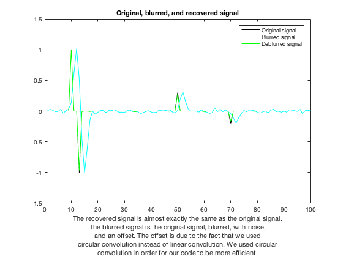

Liam Madden
APPM 5720 Homework 4
Contents
Abstract
In this experiment, we started with a discrete signal. Then, we blurred it using circular convolution, and we added noise to it. Acting as though we had been given the blurred and noised signal without knowing how it started, our goal was to recover the original signal. To do so, we solved the least squares problem in CVX and got the value of the dual variable from this. Then, we used the dual variable to determine our equivalent sparse least squares problem. We solved this in CVX using the matrix representation of our "blur" function and in fasta using the actual "blur" function. The latter took about 1/20th the time of the former to compute.
Clear
clear all close all
Blur
First, define the signal
N = 100; x = zeros(N,1); x(10) = 1; x(13) = -1; x(50) = 0.3; x(70) = -0.2; % Then, define the blur function B = @(x) ifft(fft(x).*fft(exp(-[-2:2].^2/2)',N)); % and determine its matrix representation matrixB = implicit2explicit(B,N); % Now, apply the blur function to x and add noise sigma = 0.02; % standard deviation z = normrnd(0,sigma,N,1); % noise y = B(x) + z; % y=matrixB*x+z
Deblur
epsilon = sigma*sqrt(N); % Recover x using least squares in CVX with matrixB cvx_begin variables xr(N) dual variable lambda minimize norm(xr,1) subject to lambda : sum_square(matrixB*xr-y) <= epsilon^2; cvx_end
Calling SDPT3 4.0: 303 variables, 102 equality constraints
------------------------------------------------------------
num. of constraints = 102
dim. of socp var = 302, num. of socp blk = 101
dim. of linear var = 1
*******************************************************************
SDPT3: Infeasible path-following algorithms
*******************************************************************
version predcorr gam expon scale_data
NT 1 0.000 1 0
it pstep dstep pinfeas dinfeas gap prim-obj dual-obj cputime
-------------------------------------------------------------------
0|0.000|0.000|7.0e+00|9.2e+00|1.8e+03| 1.414214e+02 0.000000e+00| 0:0:00| chol 1 1
1|0.923|0.895|5.4e-01|1.0e+00|2.7e+02| 1.182079e+02 -4.529441e-01| 0:0:00| chol 1 1
2|0.968|1.000|1.7e-02|9.2e-03|4.0e+01| 4.052080e+01 1.349609e+00| 0:0:00| chol 1 1
3|0.892|0.915|1.9e-03|5.0e-03|4.6e+00| 6.705879e+00 2.202118e+00| 0:0:00| chol 1 1
4|0.751|0.905|4.6e-04|9.3e-04|1.5e+00| 3.851703e+00 2.367681e+00| 0:0:00| chol 1 1
5|0.703|0.817|1.4e-04|2.7e-04|6.3e-01| 3.036018e+00 2.405809e+00| 0:0:00| chol 1 1
6|0.885|0.746|1.6e-05|9.7e-05|2.1e-01| 2.632111e+00 2.425023e+00| 0:0:00| chol 1 1
7|0.789|0.675|3.3e-06|3.5e-05|8.5e-02| 2.520127e+00 2.435562e+00| 0:0:01| chol 1 1
8|0.533|1.000|1.6e-06|6.7e-07|4.5e-02| 2.484686e+00 2.439366e+00| 0:0:01| chol 1 1
9|1.000|0.766|3.2e-09|4.7e-07|6.7e-03| 2.447454e+00 2.440791e+00| 0:0:01| chol 1 1
10|0.959|0.960|1.3e-10|1.9e-08|2.9e-04| 2.441849e+00 2.441558e+00| 0:0:01| chol 1 1
11|0.988|0.964|2.3e-12|7.2e-10|1.1e-05| 2.441594e+00 2.441583e+00| 0:0:01| chol 1 1
12|0.984|0.945|4.0e-13|4.1e-11|3.3e-07| 2.441584e+00 2.441584e+00| 0:0:01| chol 1 1
13|0.562|0.977|1.8e-11|1.9e-12|1.5e-07| 2.441584e+00 2.441584e+00| 0:0:01| chol 2 2
14|0.560|1.000|6.2e-12|1.5e-12|7.8e-08| 2.441584e+00 2.441584e+00| 0:0:01|
stop: max(relative gap, infeasibilities) < 1.49e-08
-------------------------------------------------------------------
number of iterations = 14
primal objective value = 2.44158404e+00
dual objective value = 2.44158396e+00
gap := trace(XZ) = 7.85e-08
relative gap = 1.33e-08
actual relative gap = 1.33e-08
rel. primal infeas (scaled problem) = 6.24e-12
rel. dual " " " = 1.50e-12
rel. primal infeas (unscaled problem) = 0.00e+00
rel. dual " " " = 0.00e+00
norm(X), norm(y), norm(Z) = 2.1e+00, 1.1e+01, 2.2e+01
norm(A), norm(b), norm(C) = 1.8e+01, 3.1e+00, 1.1e+01
Total CPU time (secs) = 0.58
CPU time per iteration = 0.04
termination code = 0
DIMACS: 9.7e-12 0.0e+00 8.3e-12 0.0e+00 1.3e-08 1.3e-08
-------------------------------------------------------------------
------------------------------------------------------------
Status: Solved
Optimal value (cvx_optval): +2.44158
Plot
count = 1:N; figure(1) plot(count,x,'-k',count,y,'-c',count,xr,'-g') xlabel({'The recovered signal is almost exactly the same as the original signal.','The blurred signal is the original signal, blurred, with noise,','and an offset. The offset is due to the fact that we used','circular convolution instead of linear convolution. We used circular','convolution in order for our code to be more efficient.'}) title('Original, blurred, and recovered signal') legend('Original signal','Blurred signal','Deblurred signal')
Dual
Check that the dual x is the same as the recovered x
cvx_begin
variables xd(N)
minimize norm(xd,1)+lambda*sum_square(matrixB*xd-y)
cvx_end
disp(norm(xd-xr)); % muy poco
Calling SDPT3 4.0: 302 variables, 101 equality constraints
------------------------------------------------------------
num. of constraints = 101
dim. of socp var = 302, num. of socp blk = 101
*******************************************************************
SDPT3: Infeasible path-following algorithms
*******************************************************************
version predcorr gam expon scale_data
NT 1 0.000 1 0
it pstep dstep pinfeas dinfeas gap prim-obj dual-obj cputime
-------------------------------------------------------------------
0|0.000|0.000|3.0e+00|9.5e+00|2.9e+03| 2.480048e+02 0.000000e+00| 0:0:00| chol 1 1
1|0.965|0.881|1.0e-01|1.2e+00|4.2e+02| 1.335698e+02 -9.032884e-01| 0:0:00| chol 1 1
2|1.000|0.949|1.6e-07|6.5e-02|7.0e+01| 6.462100e+01 2.300429e+00| 0:0:00| chol 1 1
3|0.897|0.904|4.2e-08|6.7e-03|8.0e+00| 1.041975e+01 2.512797e+00| 0:0:00| chol 1 1
4|0.696|0.869|4.0e-08|9.2e-04|3.2e+00| 5.874380e+00 2.705594e+00| 0:0:00| chol 1 1
5|1.000|0.692|4.2e-09|2.9e-04|5.9e-01| 3.382775e+00 2.796330e+00| 0:0:00| chol 1 1
6|0.630|0.845|3.4e-09|4.5e-05|2.9e-01| 3.129008e+00 2.843534e+00| 0:0:00| chol 1 1
7|0.705|1.000|1.8e-09|5.4e-08|1.2e-01| 2.977619e+00 2.857216e+00| 0:0:00| chol 1 1
8|1.000|0.798|1.1e-09|1.5e-08|2.0e-02| 2.882383e+00 2.861927e+00| 0:0:00| chol 1 1
9|0.858|0.982|3.0e-10|1.0e-09|3.9e-03| 2.867388e+00 2.863536e+00| 0:0:00| chol 1 1
10|0.977|0.928|6.9e-12|1.8e-10|3.7e-04| 2.864059e+00 2.863692e+00| 0:0:00| chol 1 1
11|0.976|0.938|7.1e-12|1.3e-11|1.5e-05| 2.863730e+00 2.863716e+00| 0:0:00| chol 1 1
12|0.995|0.979|5.5e-12|1.7e-12|4.2e-07| 2.863718e+00 2.863717e+00| 0:0:00| chol 1 1
13|0.562|0.972|9.6e-12|1.1e-12|2.0e-07| 2.863718e+00 2.863717e+00| 0:0:00| chol 1 1
14|0.564|1.000|1.4e-11|1.6e-12|1.0e-07| 2.863718e+00 2.863717e+00| 0:0:00| chol 1 2
15|0.564|1.000|6.2e-12|2.5e-12|5.5e-08| 2.863717e+00 2.863717e+00| 0:0:00|
stop: max(relative gap, infeasibilities) < 1.49e-08
-------------------------------------------------------------------
number of iterations = 15
primal objective value = 2.86371748e+00
dual objective value = 2.86371743e+00
gap := trace(XZ) = 5.48e-08
relative gap = 8.15e-09
actual relative gap = 8.14e-09
rel. primal infeas (scaled problem) = 6.18e-12
rel. dual " " " = 2.45e-12
rel. primal infeas (unscaled problem) = 0.00e+00
rel. dual " " " = 0.00e+00
norm(X), norm(y), norm(Z) = 2.1e+00, 4.2e+00, 1.9e+01
norm(A), norm(b), norm(C) = 1.8e+01, 3.1e+00, 1.9e+01
Total CPU time (secs) = 0.24
CPU time per iteration = 0.02
termination code = 0
DIMACS: 9.6e-12 0.0e+00 4.0e-12 0.0e+00 8.1e-09 8.1e-09
-------------------------------------------------------------------
------------------------------------------------------------
Status: Solved
Optimal value (cvx_optval): +2.86372
3.5604e-06
Adjoint
The adjoint of B should be
Bstar = @(x) ifft(fft(x).*conj(fft(exp(-[-2:2].^2/2)',N))); % verify that it is actually the adjoint verify = testAdjoint(B,Bstar,N); % the adjoint is verified (verify = 1)
CVX
Now, time the problem using CVX and matrixB
tau = 1/2/lambda;
tic
cvx_begin
variables x3(N)
minimize tau*norm(x3,1)+0.5*sum_square(matrixB*x3-y)
cvx_end
t1 = toc;
disp(norm(x3-xr)); % I mean, this was the exact same as how we calculated xd
Calling SDPT3 4.0: 302 variables, 101 equality constraints
------------------------------------------------------------
num. of constraints = 101
dim. of socp var = 302, num. of socp blk = 101
*******************************************************************
SDPT3: Infeasible path-following algorithms
*******************************************************************
version predcorr gam expon scale_data
NT 1 0.000 1 0
it pstep dstep pinfeas dinfeas gap prim-obj dual-obj cputime
-------------------------------------------------------------------
0|0.000|0.000|3.0e+00|1.5e+01|4.8e+02| 1.175007e+01 0.000000e+00| 0:0:00| chol 1 1
1|1.000|0.895|9.3e-07|1.7e+00|5.8e+01| 1.061104e+01 -3.094230e+00| 0:0:00| chol 1 1
2|1.000|0.982|2.1e-07|3.9e-02|6.5e+00| 5.808780e+00 7.029047e-02| 0:0:00| chol 1 1
3|0.930|0.990|1.1e-07|1.4e-03|4.7e-01| 5.830486e-01 1.151649e-01| 0:0:00| chol 1 1
4|0.857|0.804|2.1e-07|3.5e-04|7.3e-02| 1.971022e-01 1.244496e-01| 0:0:00| chol 1 1
5|0.892|0.737|7.0e-08|1.0e-04|1.9e-02| 1.507278e-01 1.319482e-01| 0:0:00| chol 1 1
6|1.000|0.780|1.1e-08|2.3e-05|3.3e-03| 1.385222e-01 1.352567e-01| 0:0:00| chol 1 1
7|0.877|0.809|3.1e-09|4.5e-06|8.2e-04| 1.364114e-01 1.355976e-01| 0:0:00| chol 1 1
8|0.861|0.986|9.3e-10|7.5e-08|1.5e-04| 1.358145e-01 1.356690e-01| 0:0:00| chol 1 1
9|0.897|0.977|4.5e-10|2.9e-09|2.8e-05| 1.357047e-01 1.356771e-01| 0:0:00| chol 1 1
10|1.000|0.988|5.4e-13|1.2e-10|2.6e-06| 1.356807e-01 1.356781e-01| 0:0:00| chol 1 1
11|0.992|0.996|2.7e-12|1.6e-12|4.7e-08| 1.356783e-01 1.356783e-01| 0:0:00| chol 1 1
12|0.562|1.000|1.6e-12|1.0e-12|2.4e-08| 1.356783e-01 1.356783e-01| 0:0:00| chol 1 1
13|0.563|1.000|3.4e-12|1.0e-12|1.3e-08| 1.356783e-01 1.356783e-01| 0:0:00|
stop: max(relative gap, infeasibilities) < 1.49e-08
-------------------------------------------------------------------
number of iterations = 13
primal objective value = 1.35678306e-01
dual objective value = 1.35678294e-01
gap := trace(XZ) = 1.29e-08
relative gap = 1.01e-08
actual relative gap = 1.01e-08
rel. primal infeas (scaled problem) = 3.42e-12
rel. dual " " " = 1.00e-12
rel. primal infeas (unscaled problem) = 0.00e+00
rel. dual " " " = 0.00e+00
norm(X), norm(y), norm(Z) = 2.1e+00, 2.0e-01, 9.1e-01
norm(A), norm(b), norm(C) = 1.8e+01, 3.1e+00, 1.9e+00
Total CPU time (secs) = 0.15
CPU time per iteration = 0.01
termination code = 0
DIMACS: 5.3e-12 0.0e+00 1.2e-12 0.0e+00 1.0e-08 1.0e-08
-------------------------------------------------------------------
------------------------------------------------------------
Status: Solved
Optimal value (cvx_optval): +0.135678
3.3127e-06
Fasta
Now, time the problem using fasta and B
opts = [];
opts.recordObjective = true;
opts.verbose=true;
opts.stringHeader=' ';
initialGuess = zeros(N,1);
tic
[x4,outs] = fasta_sparseLeastSquares(B,Bstar,y,tau,initialGuess,opts);
t2 = toc;
FASTA: mode = adaptive
maxIters = 1000, tol = 1.00e-03
Done: time = 0.029 secs, iterations = 37
Compare CVX to fasta
disp(norm(x4-x3)); % the two different methods (CVX and fasta) give solutions that are the same up to three digits of accuracy disp(t1); disp(t2); % fasta is much faster!!!!!
0.0077
0.4096
0.0297